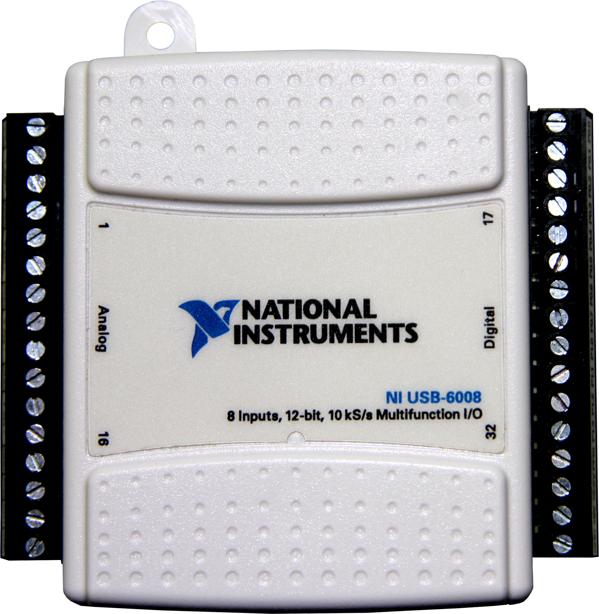
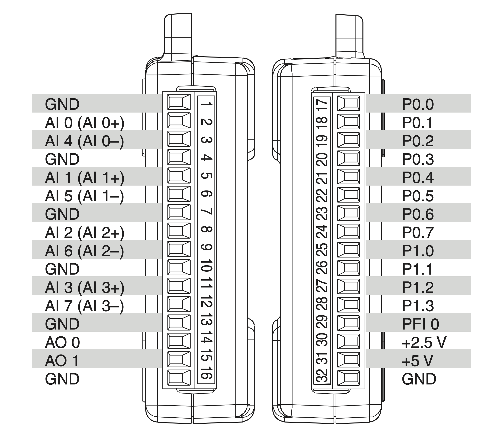
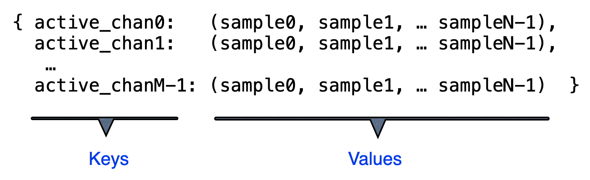

National Instruments USB-6008/6009
Learn how to control the National Instruments multi-function USB-6008 module from Python.

Figure: NI USB 6008
Introduction
The National Instruments USB-6008 is a multi-function USB Data Acquisition device. There is also a higher-performance version, the USB-6009, of which there are a couple in the APL, but they are identical to program.
The USB-6008/6009 each have:
| Feature | Number |
|---|---|
| ADC | 8 channels (single-ended), 4 channels (differential) |
| DAC | 2 channels |
| Digital I/O | 12 lines |
| Digital Counter | 1 line |
When an ADC channel is operated in single-ended mode, a single line is used to measure the voltage w.r.t. ground.
When an ADC channel is operated in differential mode, two lines are used to measure the voltage difference between them (neither need be at ground) - hence only half of the number of channels are avaiable. The resolution and ranges are better in differential than in single-ended mode and, in general, you should use differential mode, unless more than 4 channels are needed.
The table below describes the Analogue Input (AI) differences of the two modules:
| Feature | NI USB-6008 | NI USB-6009 |
|---|---|---|
| AI | 12 bits differential, 11 bits single-ended | 14 bits differential, 13 bits single-ended |
| Max AI sample rate (single channel) | 10 kS/s | 48 kS/s |
| Max AI sample rate (multiple channels, aggregate) | 10 kS/s | 48 kS/s |
There are also difference in the Digital I/O, but this is not a concern in the APL.
USB 6008 Specifications
| Feature | Specifcation |
|---|---|
| ADC | 8 × 11-bit single-ended mode - range ±10 V 4 × 12-bit differential mode - ranges: ± 20V , ±10V, ±5 V, ±4 V, ±2.5 V, ±2 V, ±1.25 V, ±1 V. ( both AI+ and AI- must be within ±10V of ground). A built-in amplifier matches signal ADC range - specify in software |
| DAC | 2 × 12-bit, 0-5V range, 150 Hz max. (software timed ) |
| Digital I/O | P0 <0..7> 8 Digital Lines P1 <0..3> 4 Digital Lines P0 and P1 programmables independently as inputs or outputs, or together |
| Digital Counter | 1 × 32-bit, count up on falling edge. Max. freq.: 5 MHz, Min. pulse hi/lo: 100 ns, Hi: >2.0V, Lo<0.8V |
USB-6008 Connections
The connections to the USB-6008 are made via screw terminals with a map of the connections shown in the figure below. The analogue connections are on one side while the digital are on the other. Several ground terminals are available in the diagram.
| Name | Meaning |
|---|---|
| AI | Analogue Input, i.e. ADC |
| AO | Analoge Output, i.e. DAC |
| PF | Digital Counter |
| P0/P1 | Digital I/O Line |
| GND | Ground |

Figure: NI USB-6008/6009 Connections
Note
Note that the figure shows both single-ended and differential connections for the ADCs. So, for example, connections 2 and 3 can be either AI 0 and AI 4 (in single-ended mode) or work together as a single differential channel (AI 0+ and AI 0-).
Programming the USB-6008
To communicate with the NI USB-6008 module we use a Python library called PyDAQmx_Helper, which was developed in the UCD School of Physics.
This library needs other libraries installed (NIDAQmx from National Instruments and PyDAQmx which calls the NIDAQmx C-based interface.
Note
All communication with the NI USB-6008 will utilise the the PyDAQmx_Helper library and you will never need to interact directly with the NIDAQmx or PyDAQmx libraries!
NIDAQmx, PyDAQmx and PyDAQmx_Helper are installed on all the APL computers that interface with experiments. If you have a problem please contact a member of staff or a demonstrator.
Warning
Do not install the NIDAQmx/PyDAQmx software on your own computer - use the computers provided for interfacing!
Programming the ADC
Setting up
To communicate with the ADC Channels on the USB-6008 you must use the PyDAQmx_Helper ADC class. There are two ways to read out the voltages, depending on whether you just want to read a single voltage at a time from one channel, or want to sample voltages from one or more channels. The first three steps are the same in either case:
-
import the ADC class
-
make an instance of the ADC class
- add channels, and optionally specify mode and range, e.g. to add just channel 0:
For options to ADC addChannels() see below.
Adding Channels & Options
The ADC method:
takes four arguments, three of which are optional and default to the values shown:
'newChannels'is a list of channel ids to be added'ADC_mode'is either'"DAQmx_Val_Diff"'for differential mode (default) or'"DAQmx_Val_RSE"'for single-ended mode'minRange'and'maxRange'should be specified to most closely match the range of the signal you are measuring.
Warning
If you are measuring a small voltage can lose resolution by not specifying the range since the defaults are ±10 V - make sure to specify the correct range!
Note: there is also an ADC method
which returns a list of the channels that have been added.
To read out a single voltage from a single channel
To reaout the voltage once when only a single channel is connected use the ADC method:
which returns the voltage as a floating-point number.
Here is a complete code snippet to read out and print the voltage on channel 0:
from pydaqmx_helper.adc import ADC
myADC = ADC()
myADC.addChannels([0])
val = myADC.readVoltage()
print(val)
To read out multiple channels and/or samples
If you want to read out more than one channel, or have the USB-6008 sample voltages at some sample rate (i.e. automatically read the voltages at a specified rate) then you must use
where the total number of samples per channel and the sample rate can be specificed (both default to 1 if not given). Recall that the USB-6008 has a maximum sample rate of 10 kS/s for all channels combined.
ADC.sampleVoltages() returns a dictionary where the keys are the channel ids and the values are the samples (as tuples):

Figure: dictionary returned by sampleVoltages
Recall that the values are accessed using dict[key] and that tuples are immutable sequences.
Example: To to record 100 samples per channel at 200 Hz for channels 0 and 2, in differential mode (default), range = ±5V
from pydaqmx_helper.adc import ADC
myADC = ADC()
myADC.addChannels([0,2], minRange=-5, maxRange=5)
data = myADC.sampleVoltages(100,200)
samples0 = data[0] # tuple of samples associated with channel with id 0
samples2 = data[2] # tuple of samples associated with channel with id 2
Programming the DAC
The USB-6008 has two independent DAC channels. They are programmed from Python as follows:
Make an instance of the DAC class, specifying which channel (0 or 1) to use, e.g. to use channel 0:
Write the voltage to it, e.g. to produce an output voltage of 2.62 V:
myDAC.writeVoltage(2.62)
The DAC class works differently to the ADC class: with the ADC class you make one instance of the class and add the channels, with the DAC class you specify the channel when an instance is created. If you want to use both DAC channels you need to make two instances of the class!
Programming the Digital I/O Ports
The USB 6008 has an 8-bit port I/O (P0) and a 4-bit I/O port (P1) that can be used individually or together as a single 12-bit port.
Usage:
Make an instance of the class. The Digital_IO class takes two (optional) arguments specifying the port and direction:- Options for port are: ‘0’ for P0, ‘1’ for P1 or ‘0:1’ for both combined (default)
- Options for direction are ‘input’ or ‘output’ (default). e.g.
or
If the port is set as an input then you can read from it using read():
If the port is set as an output then you can write a value to it using write(val), which returns a string representaiton of the binary numbers written out:
Note
It is the low bits of val that get written to the port.
Programming the Digital Counter
The 32-bit counter (pin PFI0) counts on the falling edge of a digital pulse.
Usage:
- Import the counter class:
- Make an instance of the counter class:
- When ready, start counting:
- Read out the number of counts at any time with:
- Read, stop and reset with:
Note
start() re-starts counting from 0.
The Python time.sleep() function is useful to use with the counter.